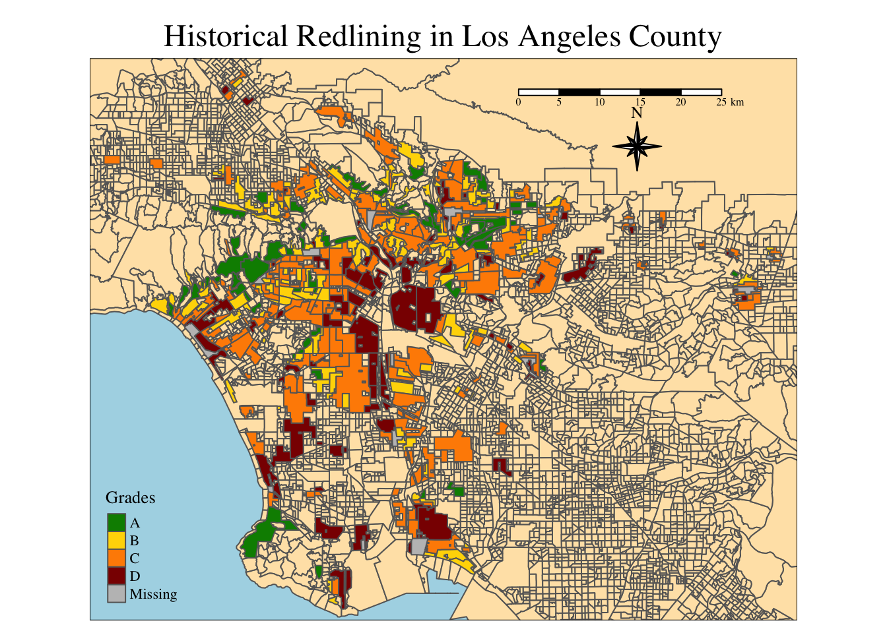

Code
library(tidyverse)
library(janitor)
library(here)
library(sf)
library(tmap)
library(kableExtra)
library(patchwork)Exploring patterns of environmental justice
library(tidyverse)
library(janitor)
library(here)
library(sf)
library(tmap)
library(kableExtra)
library(patchwork)# Read in HOLC data, make shape valid
holc <- sf::st_read(here::here('data', 'mapping-inequality/mapping-inequality-los-angeles.json')) |>
st_make_valid()Reading layer `mapping-inequality-los-angeles' from data source
`/Users/bgrazda/MEDS/EDS-223/hw/hw2-bgrazda/data/mapping-inequality/mapping-inequality-los-angeles.json'
using driver `GeoJSON'
Simple feature collection with 417 features and 14 fields
Geometry type: MULTIPOLYGON
Dimension: XY
Bounding box: xmin: -118.6104 ymin: 33.70563 xmax: -117.7028 ymax: 34.30388
Geodetic CRS: WGS 84# Read in EJ screen data, transform EJ screen to have same crs as holc df
ejscreen <- sf::st_read(here::here("data", "ejscreen","EJSCREEN_2023_BG_StatePct_with_AS_CNMI_GU_VI.gdb")) |>
st_transform(st_crs(holc)) |>
st_make_valid() Reading layer `EJSCREEN_StatePctiles_with_AS_CNMI_GU_VI' from data source
`/Users/bgrazda/MEDS/EDS-223/hw/hw2-bgrazda/data/ejscreen/EJSCREEN_2023_BG_StatePct_with_AS_CNMI_GU_VI.gdb'
using driver `OpenFileGDB'
Simple feature collection with 243021 features and 223 fields
Geometry type: MULTIPOLYGON
Dimension: XY
Bounding box: xmin: -19951910 ymin: -1617130 xmax: 16259830 ymax: 11554350
Projected CRS: WGS 84 / Pseudo-Mercator# filter for LA County
ejscreen_LA <- ejscreen |>
dplyr::filter(CNTY_NAME == 'Los Angeles County' &
ID != '060379902000' &
ID !='060379901000' &
ID != '060379903000' &
ID != '599100') |>
st_make_valid()
# Filter for surrounding counties for base map context
san_bern <- ejscreen |> filter(CNTY_NAME == 'San Bernardino County') |>
st_make_valid()
orange_county <- ejscreen |> filter(CNTY_NAME == 'Orange County') |>
st_make_valid()
ventura <- ejscreen |> filter(CNTY_NAME == 'Ventura County') |>
st_make_valid()
kern <- ejscreen |> filter(CNTY_NAME == 'Kern County') |>
st_make_valid()
riverside <- ejscreen |> filter(CNTY_NAME == 'Riverside County') |>
st_make_valid()
# Read in dataframe
meta <- readxl::read_xlsx(here::here('data', 'ejscreen', 'EJSCREEN_2023_BG_Columns.xlsx'),
col_names = c('Column Number', 'Column Names', 'Description')) |>
slice(c(-1, -2))# Conditional statement to check for coordinate reference systems
if(st_crs(holc) == st_crs(ejscreen_LA) & st_crs(holc) == st_crs(ejscreen)) {
print("It's a match! Coordinate reference systems of datsets match. ")
} else{
warning("Coordinate reference systems do not match. Please transform your data.")
}[1] "It's a match! Coordinate reference systems of datsets match. "tmap_mode('plot')
# Layer shapes using bounding box visualizing LA County and its surrounding counties
tmap_options(check.and.fix = TRUE)
tm_shape(ejscreen_LA,
bbox = holc) +
tm_polygons(col = 'moccasin') +
tm_shape(holc) +
tm_polygons(col = 'grade',
palette = c('A' = 'green4',
'B' = 'gold',
'C' = 'darkorange',
'D' = 'red4'),
title = "Grades") +
tm_shape(san_bern) +
tm_polygons(col = 'moccasin') +
tm_shape(kern) +
tm_polygons(col = 'moccasin') +
tm_shape(orange_county) +
tm_polygons(col = 'moccasin') +
tm_shape(ventura) +
tm_polygons(col = 'moccasin') +
tm_layout(frame = TRUE,
main.title = "Historical Redlining in Los Angeles County",
main.title.position = "center",
bg.color = "lightblue",
legend.position = c("left", "bottom"),
# legend.outside = TRUE,
# legend.outside.position = "right",
# legend.outside.size = .4,
fontfamily = "serif",
# outer.bg.color = 'grey83',
# legend.frame = TRUE,
# legend.frame.lwd = 1.2,
# legend.bg.color = 'papayawhip',
legend.title.size = 1) +
tm_scale_bar(position = c(.6, .9)) +
tm_compass(type = "8star",
position = c(.725, .8), # Position 8 star compass below the scale bar
size = 2.4) 
# Create a joined data frame that will be modified to create table and figures
holc_la_join <- st_join(ejscreen_LA, holc, join = st_intersects)# Join datasets for census blocks, add the count of each grade group and divide by number of rows; keep grade and percent
percent_holc <- holc_la_join |>
group_by(grade) |>
summarise(percent = (n()/nrow(ejscreen_LA) * 100)) |>
select(grade, percent) |>
st_drop_geometry()
kable(percent_holc, col.names = c("Grade", "Percent"))| Grade | Percent |
|---|---|
| A | 6.815422 |
| B | 18.806922 |
| C | 46.417729 |
| D | 20.431087 |
| NA | 43.913176 |
## Create test that the table is correct, add all the percents together and check# Join if st_intersects is true, so we make sure to look at values of overlapping geometrise
low_income_join <- holc_la_join |>
group_by(grade) |>
summarise(mean_low_income = (mean(LOWINCPCT) * 100)) |>
ungroup()
# Create a Test that the mean is correct per group
# Plot data
fig1 <- ggplot(low_income_join) +
geom_col(aes(x = grade, y = mean_low_income,
fill = grade)) +
labs(x = "HOLC Grade",
y = "Average Percent Low Income (%)",
title = "Percent Low Income per HOLC Grades",
caption = "Home Owner's Loan Corporation (HOLC)") +
theme_classic() +
theme(plot.caption = element_text(hjust = -0.15, size = 10, face = "bold"),
legend.position = 'None') +
scale_fill_manual(values = c('green4',
'gold',
'darkorange',
'red4',
'slategrey'))
fig1
# # group grades to look at particulate matter 2.5
# particul_matter <- holc_la_join |>
# mutate(raw_pm_2.5 = P_PM25) |>
# group_by(grade) |>
# summarise(mean_low_income = mean(P_PM25)) |>
# select()
# ungroup()
#
# joined_df_percentiles <- holc_la_join |>
# group_by(grade) |>
# mutate(summarise(mean_low_income = mean(P_PM25)))
# Create boxplot
fig2 <- ggplot(holc_la_join, aes(x = grade,
y = P_PM25)) +
geom_boxplot(aes(x = grade,
y = P_PM25,
fill = grade)) +
labs(x = "HOLC Grade",
y = "Mean Percentile",
title = "Distribution of Particulate Matter 2.5 Percentiles Across HOLC Grades in Los Angeles County",
fill = 'HOLC Grade') +
theme_classic() +
scale_fill_manual(values = c('green2',
'gold3',
'darkorange2',
'red3',
'slategrey')) +
theme(plot.caption = element_text(hjust = -0.15,
size = 10,
face = "bold")) +
guides(fill = 'none') +
stat_summary(fun = mean, aes(shape = "Percentile"), geom = 'point', col = "black", size = 5) +
scale_shape_manual(values=c("Percentile" = 20),
guide = guide_legend(' '))
# Figure 3: Percentile for low life expectancy
fig3 <- ggplot(holc_la_join, aes(x = grade,
y = P_LIFEEXPPCT)) +
geom_boxplot(aes(x = grade,
y = P_LIFEEXPPCT,
fill = grade)) +
labs(x = "HOLC Grade",
y = "Mean Percentile",
title = " Low Life Expectancy Across HOLC Grades in Los Angeles County",
fill = 'HOLC Grade') +
theme_classic() +
scale_fill_manual(values = c('green2',
'gold3',
'darkorange2',
'red3',
'lightgrey')) +
theme(plot.caption = element_text(hjust = -0.15,
size = 10,
face = "bold")) +
guides(fill = 'none') +
stat_summary(fun = mean, aes(shape = "Percentile"), geom = 'point', col = "black", size = 5) +
scale_shape_manual(values=c("Percentile" = 20),
guide = guide_legend(' '))
fig2 / fig3